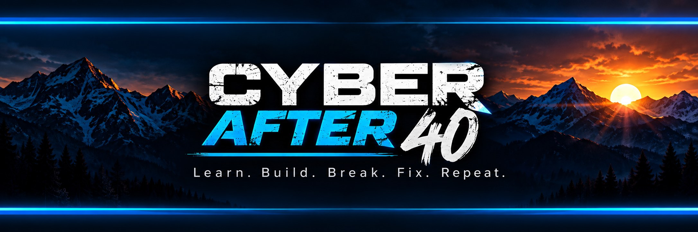

I Built an IP Tracker. Caps Lock Put Up a Fight!
Adding IP tracking to my home lab scanner—with a Spectrum router roadblock and more Python errors than I planned on.
Read Post #2 on Substack ↗
Cybersecurity · AI · Starting in my 40s
I’m Mykee—a husband, dad, Marine veteran, and cybersecurity student. I’m changing careers, learning to build things, and writing about what happens along the way.
From the blog
Trying to change careers when life has no quiet hours—work, school, family, the business, a new puppy, and the question of how long I can keep this pace.
Read Post #3 on Substack ↗Adding IP tracking to my home lab scanner—with a Spectrum router roadblock and more Python errors than I planned on.
Read Post #2 on Substack ↗Starting over isn’t exactly the plan. Neither is retiring ten years after I’m dead. Where this career change started, and what I hope to learn.
Read Post #1 on Substack ↗Inside the home lab
Small projects built around the equipment I have and the things I want to understand.
Learning project
A Python desktop app that reads a selected SSH log file, groups failed login attempts by IP address, and displays the usernames, timestamps, and a basic risk rating.
The results in Post #2 came from sample data. The ratings are simple learning rules; they don’t prove an address belongs to an attacker.
Read how I built it ↗The person behind the posts
I’m learning cybersecurity and AI around work, family, and college. I’ve always wanted to know how things work—sometimes by taking them apart before knowing how to put them back together.
Cyber After 40 is where I share the projects, the mistakes, and the moments when something finally clicks. If you’re learning too, you’re welcome here.